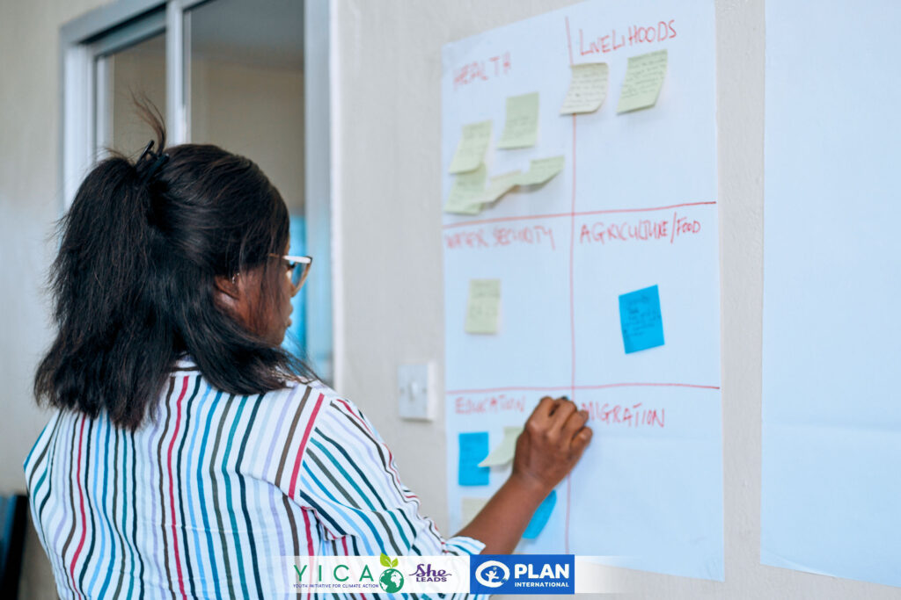
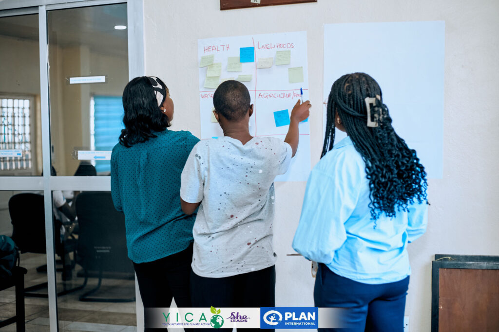
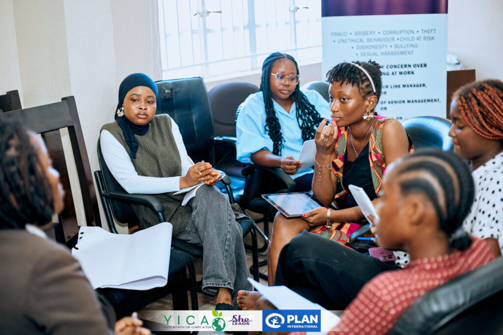
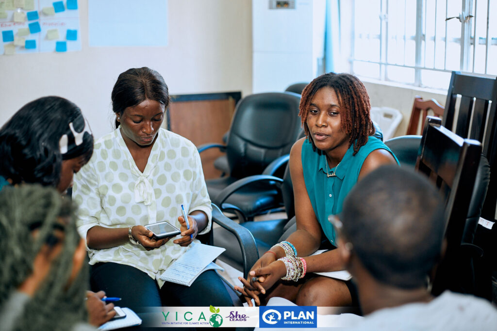

From 9th to 10th April, Youth Initiative for Climate Action (YICA) facilitated a two-day Nationally Determined Contributions (NDCs) Workshop and Consultation specifically for young women and girls across Sierra Leone.

This consultation was independently led by YICA with the goal of collecting valuable input that will be submitted to key stakeholders in the form of policy briefs and recommendations.
The official review of Sierra Leone's NDCs has been launched by the government, and it is crucial that the voices of young women and girls are heard in this process. As climate change continues to impact communities across Sierra Leone, especially vulnerable groups like women and girls, it is imperative that they are included in shaping the solutions and policies that will affect their future.

The two-day consultation included structured discussions and group activities centred on three main themes: Adaptation, Mitigation, and Gender Equality and Social Inclusion (GESI).
Participants identified critical adaptation priorities for young women and girls, focusing on improving food security, water access, and health systems to cope with climate change impacts. Recommendations included climate-smart agriculture initiatives, increased access to clean water, and disaster preparedness programmes that integrate youth and gender perspectives.
The discussion on mitigation focused on reducing greenhouse gas emissions and fostering sustainable development. Recommendations included increased adoption of renewable energy technologies, promoting sustainable waste management practices, and creating green jobs for youth and women, particularly in rural areas.

The GESI discussion emphasised the importance of ensuring that gender equality is integrated into all climate action strategies. Participants explored ways to empower young women by increasing their participation in decision-making processes and ensuring that climate policies support gender-responsive action.

This consultation was made possible with the support of She Leads and Plan International, both of whom have been instrumental in ensuring that young women and girls have the resources and opportunities to actively engage in climate action discussions.